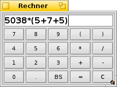

DeskCalc
DeskCalc
| Deskbar: | ||
| Ort: | /boot/system/apps/DeskCalc | |
| Einstellungen: | ~/config/settings/DeskCalc_settings |
DeskCalc ist ein einfacher Rechner, der aber trotzdem einige nette Funktionen hat, die allerdings nicht sofort ersichtlich sind.
DeskCalc kann viel mehr, als seine wenigen Tasten vermuten lassen.
Neben den Operatoren +, -, *, /, %, ^ und den Konstanten pi und e werden noch folgende mathematischen Funktionen unterstützt:
!, acos, asin, atan, atan2, cbrt, ceil, cos, cosh, exp, floor, log, log10, pow, sin, sinh, sqrt, tan und tanh.Über einen Rechtsklick sind diese Einstellungen erreichbar:
Aktiviert beim Start vom Rechner automatisch den Nummernblock. Wechselt die Einheit ("rad" und "deg") bei Winkelfunktionen. ALT 0 Minimalistische Anzeige ohne Tastenfeld. ALT 1 Die Standardansicht. ALT 2 Zeigt weitere Tasten zur Eingabe komplizierterer Berechnungen. Der Rechner geht sehr großzügig mit Benutzereingaben um:
/, :, \\ sind alles gültige Eingaben für "Division".
* und x werden als "Multiplikation" verstanden.
Aber Achtung: . and , sind beides Zeichen für Gleitkomma-Berechnungen. Sie dürfen also nicht als 1000-er Trennung verwendet werden.Man kann die Fenstergröße von Rechner nach Belieben ändern und dann als Replikant auf den Desktop ziehen. Hierzu muss natürlich in der Deskbar aktiviert sein.
Wenn eine Farbe, zum Beispiel aus Icon-O-Matic, auf das Tastenfeld gezogen wird, färbt es sich entsprechend ein.
Mit ↑ und ↓ kann man vorangegangene Berechnungen wieder aufrufen.
Alle Ausdrücke im Anzeigefeld von Rechner können als "Textschnipsel" auf den Desktop, in ein Tracker-Fenster oder eine beliebige andere Anwendung gezogen werden.
Dies ist natürlich auch andersrum möglich:
Diverse Zwischenergebnisse einer Berechnung kann man wie beschrieben als Textschnipsel anlegen, um sie später wieder in den Rechner zu ziehen, um wieder zu diesen Phasen zurückzukehren.
Oder man zieht sich eine Berechnung direkt aus einer E-Mail in den Rechner.DeskCalc kann auch direkt im Terminal benutzt werden. Der Ausdruck muss hierfür in Anführungszeichen gesetzt werden:
~> DeskCalc "sin(45)*(cos(12)+3.45)" 3.65365546732025461817951947270058
Im Terminal gestartet, wird bei trigonometrischen Funktionen immer die Einheit "Radiant" verwendet.